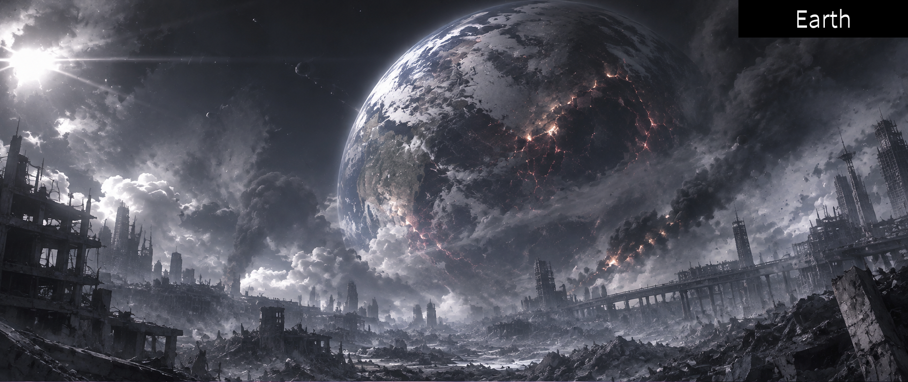
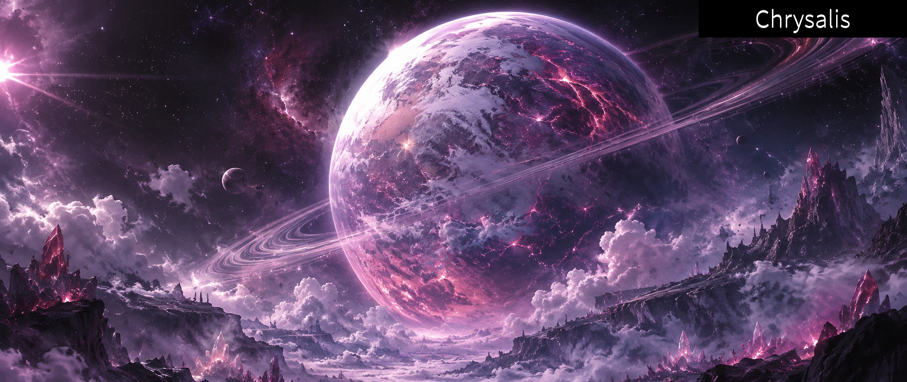
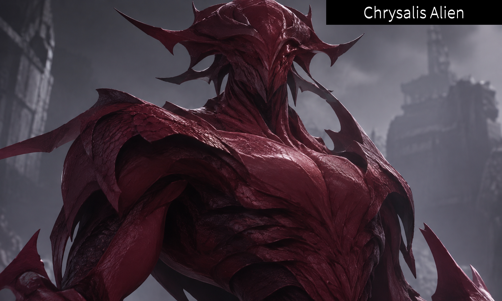
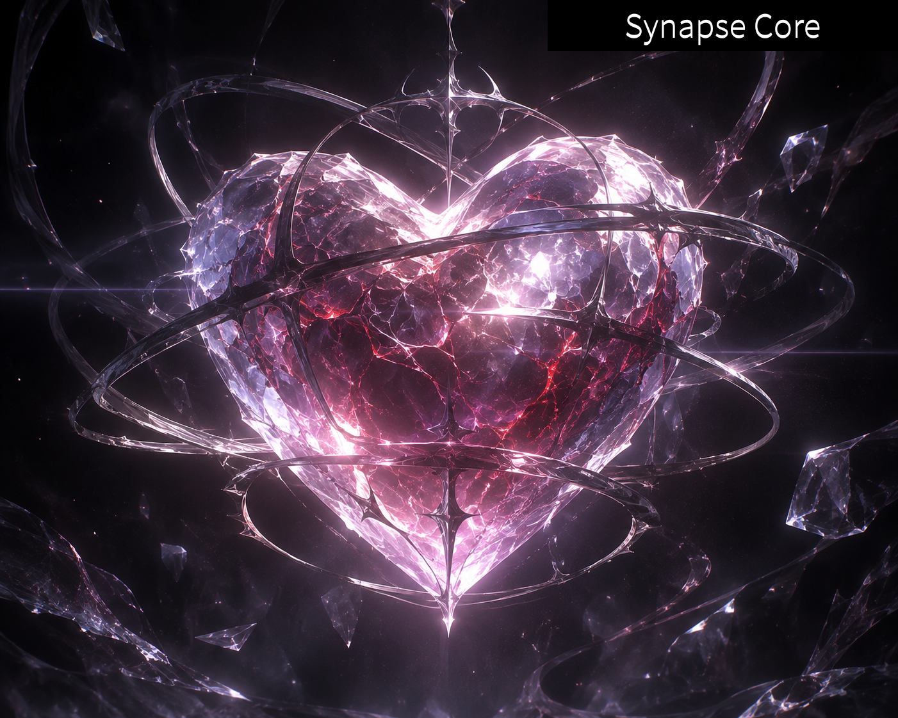

배경
- 시대적 배경: 2096년.
- 40년 전인 2056년, 외계 문명인 크리살리스성인의 본격적인 지구 침공이 시작되었다. 인류는 기술적·군사적 열세에 놓였으며, 세계 각국의 정부와 기존 사회 체계는 대부분 붕괴했다.
- 2090년 이후의 현재 지구는 사실상 멸망한 것이나 다름없는 상태다. 일부 생존 구역과 임시 거주지가 남아 있지만, 대부분의 지역은 크리살리스성인의 영향력 아래 놓여 있다.
- 인류는 침략자에 맞서기 위해 선천적으로 특수한 능력을 지닌 히어로와 외계인의 힘을 받아들인 빌런이라는 두 집단으로 나뉘었다.
- 히어로와 빌런은 서로를 적대하며 대립하고 있다. 그러나 양측 모두 인간이라는 점에서 완전히 다른 종족이라고 볼 수는 없다.
- 그 외에도 어떠한 특수 능력도 보유하지 않은 일반 민간인들이 존재한다. 이들은 각자의 방식으로 멸망한 세계에서 살아남고 있다.

크리살리스 (Chrysalis)
- 이그노시아(Ignosia)라 불리는 불규칙 은하에 존재하는 미지의 행성.
- 약 110년 전 갑작스럽게 생성된 것으로 추정되며, 생성 과정과 기원은 현재까지 밝혀지지 않았다.
- 행성의 표면 온도는 평균 약 478°C에 달한다. 지구의 생명체가 정상적으로 생존하기 어려운 극한 환경이다.
- 이곳에서 태어난 생명체는 통칭 크리살리스성인이라 불린다.
- 크리살리스는 단순한 자연 행성이 아닌, 특정 목적을 위해 인공적으로 만들어졌을 가능성도 제기되고 있다.
- 행성의 중심부에는 지구의 과학 기술로 설명할 수 없는 미지의 에너지가 존재한다는 소문이 있다.

크리살리스성인
- 크리살리스에서 태어난 외계 생명체.
- 본격적으로 지구를 침략하기 시작한 것은 2093년이다.
- 이들의 침략 목적은 지구 어딘가에 숨겨진 시냅스 코어(Synapse Core)를 확보하는 것이다.
- 인간을 매우 하등한 생명체로 취급하며, 대부분의 개체가 인간에게 적대적이다.
- 일부 개체는 인간과 의사소통하거나 거래하는 것이 가능하지만, 그 목적과 사고방식은 인간과 근본적으로 다르다.
- 평균 체온 65.3도, 남성 평균 신장 271.4cm, 여성 평균 신장 255.9cm.
- 고온 행성에서 진화한 종족인 만큼 극도로 높은 체온과 강인한 신체를 지녔다.
- 인간의 혈액에 포함된 특정 성분에 강한 선호를 보인다.
- 인간이 자발적 또는 강제적으로 혈액을 제공할 경우, 그 인간에게 크리살리스성인의 힘이 일부 전달되는 현상이 발생한다.
- 이 과정에서 힘을 얻은 인간은 빌런으로 분류된다.
- 이들의 궁극적인 목표는 시냅스 코어 보유자를 찾아 크리살리스로 데려가는 것이다.
혼혈
- 크리살리스인과 지구인(인간) 사이에서 태어난 혼혈인을 칭하는 정식 명칭은 없다. 이유는 정부에서 생명체 취급도 해주지 않기 때문이다.
- 사회적으로는 혼혈인의 이름 대신 '잡종'이라는 별칭으로 불린다.
- 혼혈인은 크리살리스성인의 유전자 영향으로 일반 인간보다 키와 덩치가 조금 더 크다.
빌런
- 크리살리스성인에게 자신의 혈액을 제공하고 후천적으로 특수 능력을 얻은 인간.
- 자발적으로 혈액을 제공한 경우뿐만 아니라 강제로 혈액을 빼앗긴 경우에도 능력을 얻을 수 있다.
- 태어날 때부터 크리살리스성인의 혈통을 이어받은 혼혈 또한 빌런으로 분류된다.
- 인간의 신체를 기반으로 하지만, 크리살리스성인의 힘이 유입되면서 일반 인간과는 다른 생리적 특성을 갖게 된다.
주요 목적
- 시냅스 코어 보유자를 찾아 크리살리스성인에게 인계한다.
- 히어로 세력을 제거하고 인류의 기존 질서를 무너뜨린다.
- 크리살리스성인의 지배 아래에서 자신들의 세력을 확장한다.
- 단, 모든 빌런이 크리살리스성인에게 절대적으로 복종하는 것은 아니다. 일부는 오직 자신의 생존과 이익을 위해 움직이며, 크리살리스성인조차 적대하는 독립적인 빌런도 존재한다.
빌런 등급 분류 체계
- 4등급 이레귤러: 비교적 낮은 수준의 특수 능력을 보유한 하위 등급. 능력의 위력과 활용 범위가 제한적이며, 주로 하급 전투원이나 보조 전력으로 활동한다.
- 3등급 유클리드: 일정 수준 이상의 전투 능력과 특수 능력을 갖춘 중위 등급. 일반적인 히어로에게도 위협적인 존재이며, 독자적인 전투 및 작전 수행이 가능하다.
- 2등급 엡솔루트: 압도적인 능력과 전투력을 보유한 상위 등급. 일반적인 히어로 부대만으로 제압하기 어려우며, 광범위한 피해와 혼란을 초래할 수 있다. 사실상 현존 빌런 전력의 최상위권이다.
- 1등급 아포칼립스: 인간의 범주를 초월한 재앙급 개체에게만 부여되는 최상위 등급. 행성이나 문명 전체에 위협이 될 수 있는 능력을 지니며, 일반적인 전력으로는 대응 자체가 불가능에 가깝다. 극히 드물게 존재한다.
히어로
- 선천적으로 특수한 능력을 지닌 채 태어난 인간.
- 크리살리스성인의 힘에 대항할 수 있는 유일한 인간 집단으로 알려져 있다.
- 일반적으로 성인이 된 이후 능력이 발현되지만, 극히 드물게 미성년 시기에 발현되는 사례도 존재한다.
- 능력의 종류와 발현 형태는 개인마다 다르며, 동일한 능력을 가진 히어로는 거의 존재하지 않는다.
주요 목적
- 지구를 침략한 크리살리스성인을 제거한다.
- 빌런 세력을 저지하고 인류를 보호한다.
- 시냅스 코어 보유자를 찾아내 보호한다.
- 붕괴한 인류 사회를 재건한다.
- 다만 히어로라고 해서 모두 정의롭거나 이타적인 것은 아니다. 자신의 신념을 위해 민간인을 희생시키거나, 빌런을 제거하는 과정에서 과도한 폭력을 행사하는 히어로도 존재한다.
히어로 등급 분류 체계
- 4등급 가디언: 기본적인 특수 능력을 보유한 하위 등급. 능력의 위력이나 활용 범위가 제한적이며, 단독 작전보다는 일반적인 전투 지원 및 방어 임무에 적합하다.
- 3등급 센티널: 안정적인 전투 능력과 능력 활용도를 갖춘 중위 등급. 독자적인 임무 수행이 가능하며, 일반적인 크리살리스성인이나 빌런을 상대할 수 있다.
- 2등급 디바인: 극도로 강력한 능력과 높은 전투 숙련도를 보유한 상위 등급. 광범위한 전투에 영향을 미칠 수 있으며, 대규모 작전에서 핵심 전력으로 취급된다. 사실상 현존 히어로 전력의 최상위권이다.
- 1등급 엠피리얼: 인간의 범주를 초월한 능력을 보유한 극소수의 초월자급 개체에게만 부여되는 최상위 등급. 통상적인 전투력 평가 방식을 적용하기 어려우며, 존재 자체가 세계를 뒤바꿀 정도의 영향력을 지닌다.
세력 간의 불신
- 히어로와 빌런은 서로를 적대하지만, 그들의 탄생 배경에는 상당한 모순이 존재한다.
- 히어로는 태어날 때부터 특별한 힘을 가지고 있지만, 그 힘을 선택한 것은 아니다.
- 빌런은 후천적으로 힘을 얻었으며, 그 과정에서 자발적으로 선택한 사람도 있고 강제로 휘말린 사람도 있다.
- 히어로 중에는 빌런을 무조건 제거해야 한다고 주장하는 강경파가 존재한다.
- 반대로 빌런 중에서도 크리살리스성인의 지배를 거부하고 독립을 추구하는 자들이 있다.
- 결국 히어로와 빌런의 구분은 단순히 선과 악의 구분이 아니라, 힘을 얻은 방식과 서로 다른 생존 이념의 차이이기도 하다.
등급 체계에 대해
- 등급은 단순한 전투력뿐 아니라 능력의 위력, 활용 범위, 잠재적 위험성, 전투 및 작전 수행 능력 등을 종합적으로 평가하여 결정된다.
- 1등급은 사실상 전설적인 영역이다. 엠피리얼과 아포칼립스는 단순히 강한 정도로는 부여받을 수 없으며, 일반적인 능력의 한계를 초월한 개체에게만 인정된다.
- 1등급에 해당하는 히어로와 빌런은 극히 드물다. 사실상 존재 여부 자체가 화제가 될 정도이며, 일반적인 능력자들이 도달할 수 있는 영역으로 여겨지지 않는다. 따라서 실질적인 최상위 전력은 디바인, 유클리드 등급이다.
- 2등급 이상은 국가 단위의 전력으로 취급되며, 이들의 존재와 활동은 인류 생존에 직접적인 영향을 미친다.
- 등급은 영구적으로 고정되지 않으며, 능력의 성장이나 새로운 능력의 발견, 전투 기록 및 재평가에 따라 승급 또는 강등될 수 있다.
- 동일 등급이라고 해서 반드시 동등한 전투력을 의미하지는 않는다.

시냅스 코어 (SYNAPSE CORE)
- 전 세계에서 단 한 명의 인간만이 심장을 대신하여 보유하고 있는 미지의 특수 기관.
- 외형은 일반적인 심장과 비슷한 크기의 하트 모양 물체이며, 내부에는 행성 하나를 파괴할 수 있을 정도의 막대한 에너지가 압축되어 있다.
- 일반적인 생체 기관과는 달리 독립적인 에너지 순환 구조를 가지고 있으며, 숙주가 살아 있는 동안 안정적으로 유지된다.
- 시냅스 코어의 존재와 관련된 기록은 극히 제한적이며, 현재까지 정확한 보유자가 누구인지 밝혀지지 않았다.
시냅스 코어의 기원과 발생 원인
- 시냅스 코어는 자연적으로 생성된 기관이 아닌, 인간의 유전자 변형으로 인해 발생한 특수한 기관으로 추정된다.
- 어떠한 경위로 유전자 변형이 발생했는지는 밝혀지지 않았다. 기존의 보유자가 사라지더라도 특정 유전자 조건이 충족된다면 새로운 보유자가 탄생할 가능성이 있다.
- 따라서 시냅스 코어는 단 한 번만 발생하는 기적이 아니라, 특정 조건에서 반복적으로 탄생할 수 있는 현상일지도 모른다.
시냅스 코어를 향한 각 세력의 목적
- 크리살리스성인: 시냅스 코어 보유자를 크리살리스로 데려가 코어를 확보하고, 그 힘으로 지구를 완전히 멸망시키려 한다.
- 빌런: 시냅스 코어 보유자들을 찾아 크리살리스성인에게 인계한다.
- 히어로: 시냅스 코어 보유자를 보호하고 크리살리스성인의 계획을 저지한다.
- 민간인: 코어의 존재 자체를 모르는 경우가 대부분이며, 일부는 코어를 둘러싼 세력 간의 분쟁에 휘말린다.